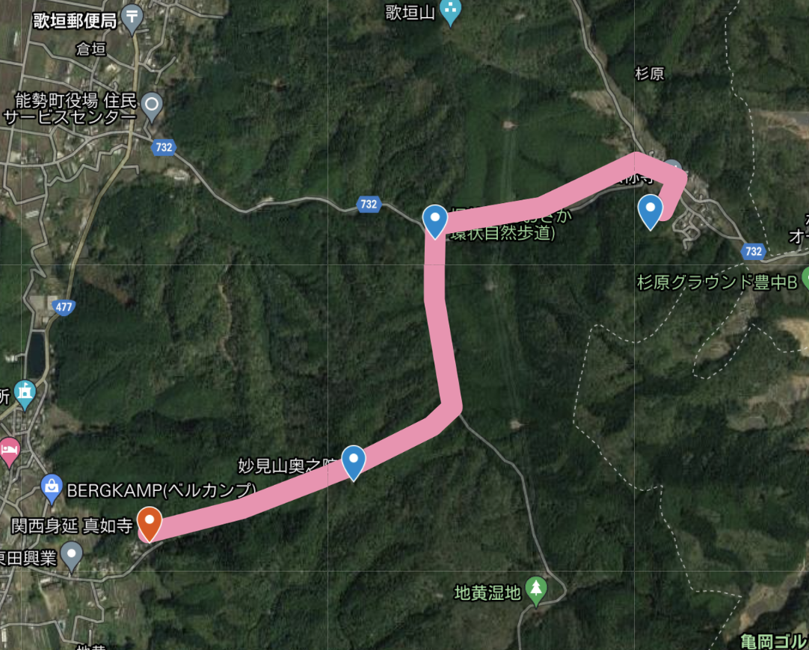
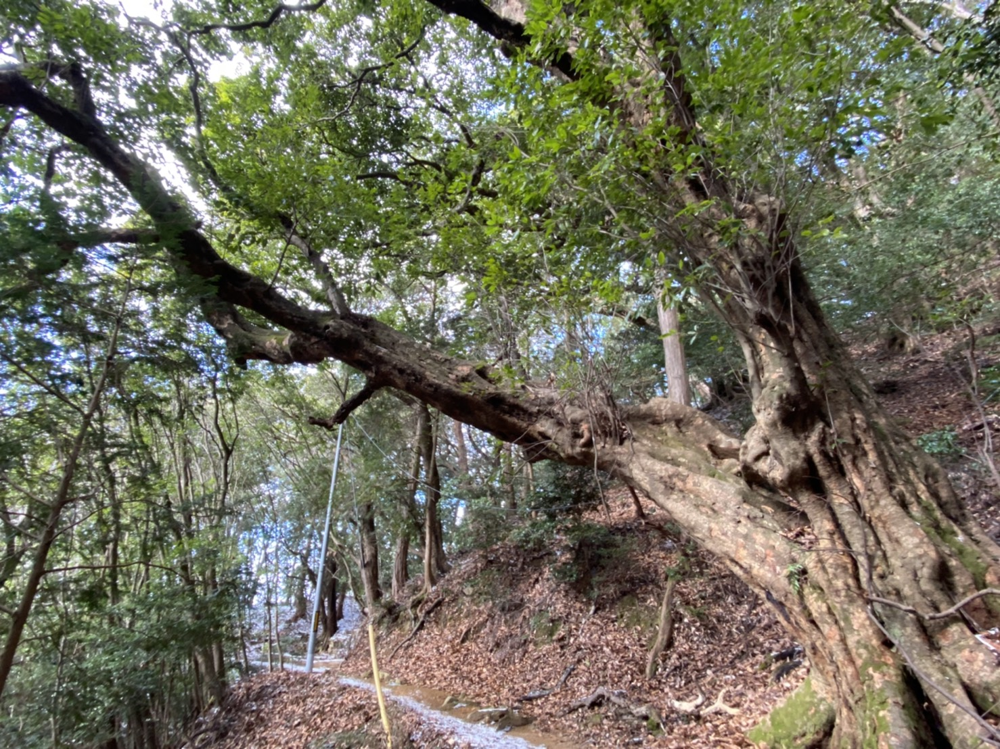
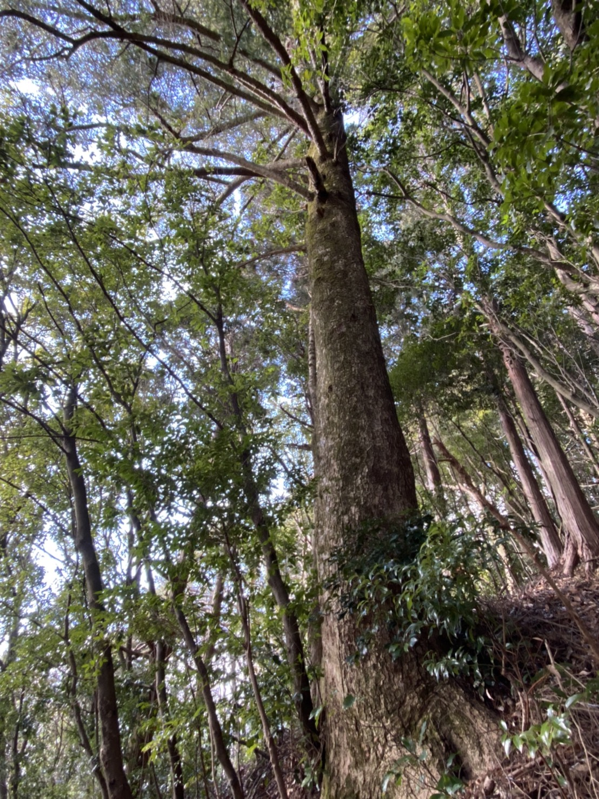
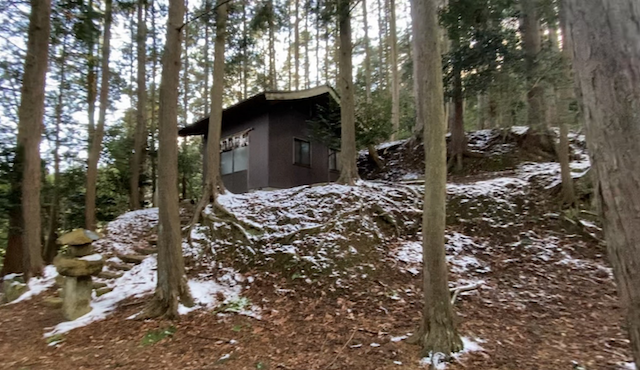
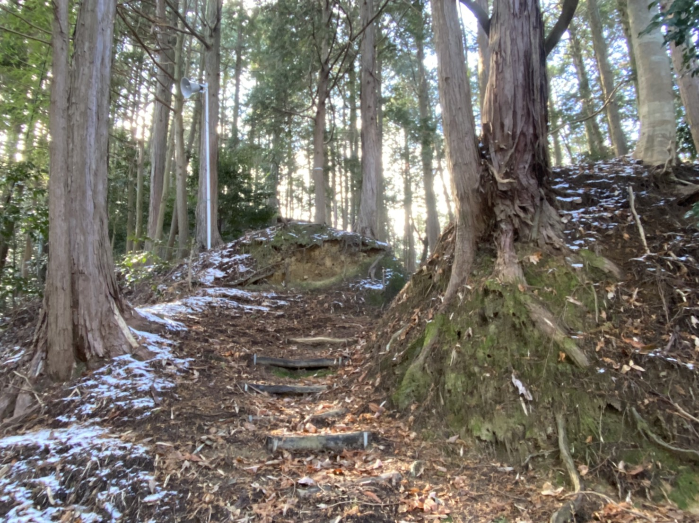
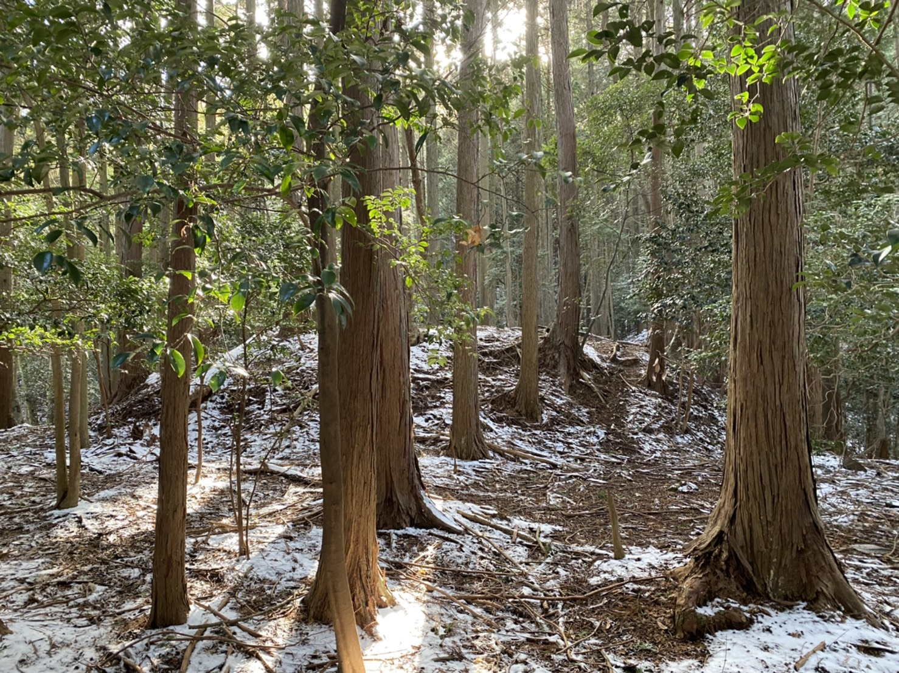
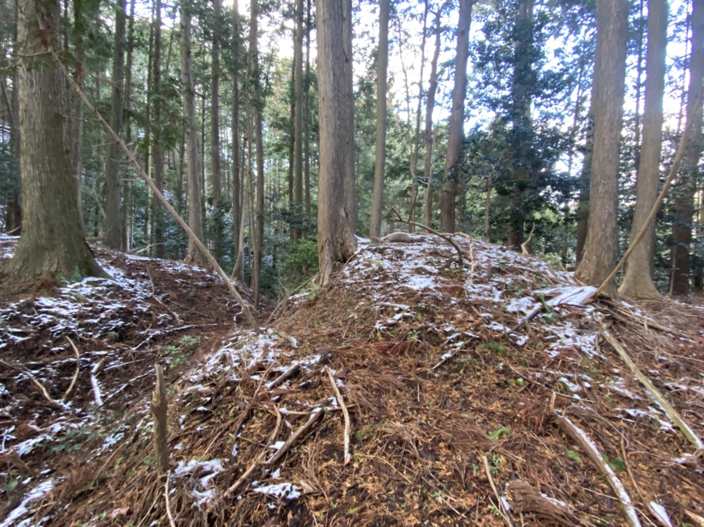
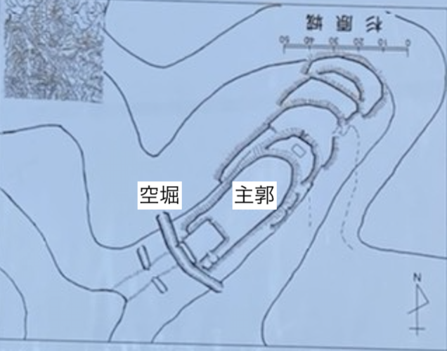
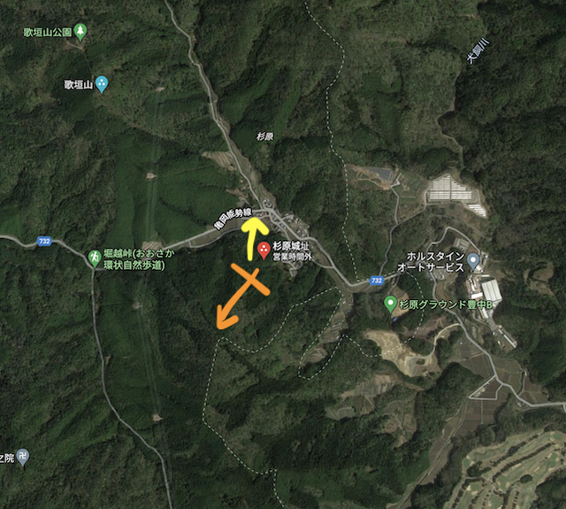
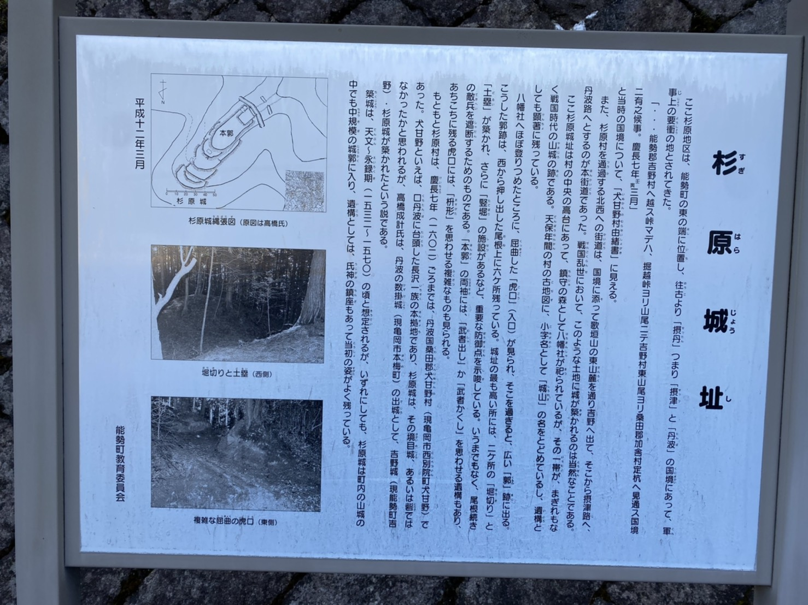

<script src="../library/marked.min.js"></script>
<head>
    <meta name="viewport" content="width=device-width">
    <link rel="stylesheet" href="library/responsive.css">
<title>
杉原城跡
</title>
</head>

<body>
<script>md(`
# 杉原城跡
<font size="2"> 2022/01/19訪問</font>
<font size="2"> 2022/01/22執筆</font>

所在地：大阪府能勢町 <a href="https://goo.gl/maps/ZTD5ZQDYxsodYoFP6">(34.966603,135.484120)</a><br>
交通手段：阪急妙見口から徒歩3時間半

## 訪問記
出立：阪急石橋駅を午前8時10分

<figure><figcaption>経路 (<a href="20220122_jio.html">地黄城</a>からはしご)</figcaption></figure><br>

<p>平日の午前であれば近所まで行くバス (倉垣) があるが、自分のように休日に行こうとすると3時間以上 (ただしこれは片道) 歩く羽目になるので要注意である。</p>
<p>
真如寺から妙見奥の院を通って杉原城を攻略する。
奥の院の周辺には樹齢数百年クラスのアカガシ (写真1左；葉柄が長いのと鋸歯のほぼない葉が特徴) や、モミの大木 (写真1右) があった。妙見山には1万年前からあるブナ原生林が残っているし、このあたりの山信仰が自然植生の保全に果たした役割は計り知れない。
</p>

<figure> <figcaption>写真1 アカガシとモミ</figcaption></figure><br>

<p>
仏称寺というお寺の裏にある道から、スロープの右手を登っていくと虎口がある。
杉原城跡は遺構の保全状態が非常に良い城跡である。マニアの間では密かに人気があるらしい。城全体の構造がはっきりと分かる土塁 (写真2)のみならず、喰違虎口、土塁 (武者隠し？)、空堀  (それぞれ写真3の左中右) なども見て取れる。
</p>

<figure><figcaption>写真2 主郭</figcaption></figure><br>

<figure>   <figcaption>写真3 主要な遺構 (左から喰違虎口、土塁、空堀) </figcaption></figure><br>

<p>城全体の平面図は写真4のようになっている。この図は以下で示す案内板 (写真6) にあったものを上下反転させたものである。</p>
<figure><figcaption>写真4 城全体の平面図</figcaption></figure><br>

<p>
空堀は南側の尾根筋の敵に対する防御として設えられたものであろう。
歌垣山の東端の平地(城の北側)に対して睨みを効かせつつ (黄矢印)、逆に尾根伝いに南や東西へ攻撃を仕掛ける (橙矢印) ことも可能だったかもしれない。
<figure><figcaption>写真5 杉原上の機能</figcaption></figure><br>
</p>

## お城の情報
遺構の残存度に比して、城の歴史に関する情報は手薄なようだ。城主や廃城の時期なども筆者が調べた限りではわからなかった。
案内板 (写真6) には1532−70年ごろの築城であると記されている。摂津と丹波の境目にある要衝である杉原に気づかれたこの城は戦略上の重要度が高かったであろう。
<figure><figcaption>写真6 杉原城の歴史</figcaption></figure><br>


`)</script>
</body>